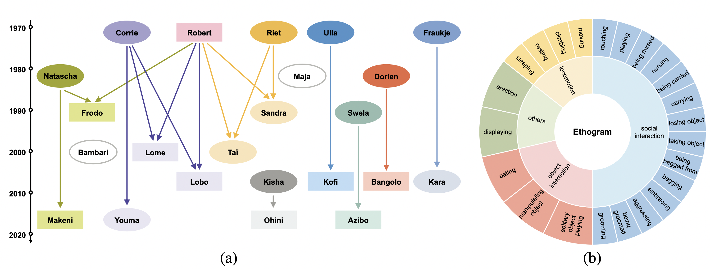

ChimpACT: A Longitudinal Dataset for
ChimpACT: A Longitudinal Dataset for
Understanding Chimpanzee Behaviors
NeurIPS 2023 Track on Datasets and Benchmarks
- Xiaoxuan Ma1,*,
- Stephan P. Kaufhold2,*,
- Jiajun Su1,*,
- Wentao Zhu1,
- Jack Terwilliger2,
- Andres Meza2,
- Yixin Zhu3,5,✉,
- Federico Rossano2,✉,
- Yizhou Wang1,3,4
1CFCS, School of Computer Science, Peking University, China
2Department of Cognitive Science, University of California, San Diego, USA
3Institute for Artificial Intelligence, Peking University, China
4Nat'l Eng. Research Center of Visual Technology, China
5PKU-WUHAN Institute for Artificial Intelligence, China
*Equal contribution
✉Corresponding authors
We propose ChimpACT, a comprehensive dataset for deciphering the longitudinal behavior and social relations of chimpanzees within a social group, hoping to advance our understanding of communication and sociality in non-human primates.
Abstract
Understanding the behavior of non-human primates is crucial for improving animal welfare, modeling social behavior, and gaining insights into distinctively human and phylogenetically shared behaviors. However, the lack of datasets on non-human primate behavior hinders in-depth exploration of primate social interactions, posing challenges to research on our closest living relatives. To address these limitations, we present ChimpACT, a comprehensive dataset for quantifying the longitudinal behavior and social relations of chimpanzees within a social group. Spanning from 2015 to 2018, ChimpACT features videos of a group of over 20 chimpanzees residing at the Leipzig Zoo, Germany, with a particular focus on documenting the developmental trajectory of one young male, Azibo. ChimpACT is both comprehensive and challenging, consisting of 163 videos with a cumulative 160,500 frames, each richly annotated with detection, identification, pose estimation, and fine-grained spatiotemporal behavior labels. We benchmark representative methods of three tracks on ChimpACT: (i) tracking and identification, (ii) pose estimation, and (iii) spatiotemporal action detection of the chimpanzees. Our experiments reveal that ChimpACT offers ample opportunities for both devising new methods and adapting existing ones to solve fundamental computer vision tasks applied to chimpanzee groups, such as detection, pose estimation, and behavior analysis, ultimately deepening our comprehension of communication and sociality in non-human primates.
Video
Dataset Description
Kinship & Ethogram
{kind=link}
Semi-naturalistic and social environment
Rich annotations
Detection, tracking, re-identification
Pose
Spatiotemporal action
Template courtesy of Jon Barron.